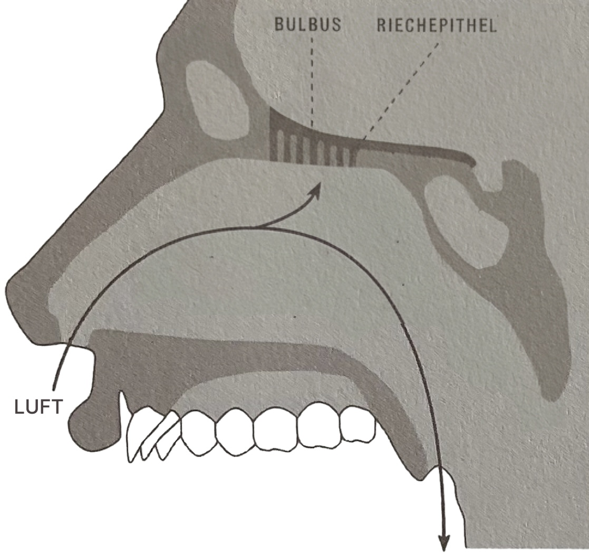
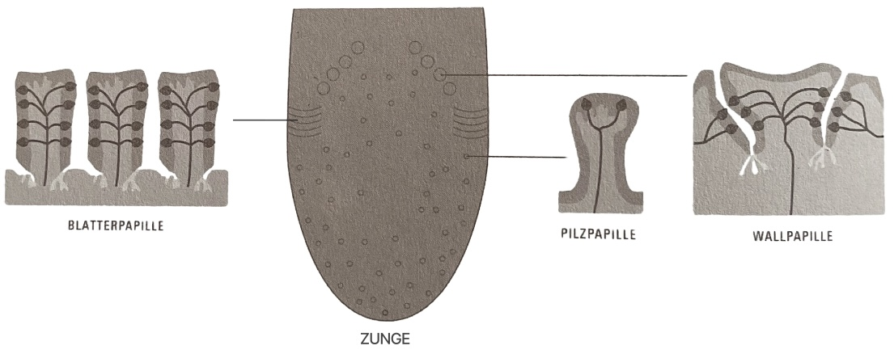

AROMA – DIE KUNST DES WÜRZENS
THOMAS A. VIERICH / THOMAS A. VILGIS
Aroma ist der entscheidende, aber oft missverstandene Teil unseres Genusserlebnisses. Während wir umgangssprachlich oft nur von Geschmack sprechen, unterscheidet die Wissenschaft strikt zwischen dem, was die Zunge leistet, und dem, was die Nase wahrnimmt. Das, was wir landläufig als Geschmack bezeichnen, ist somit nur die halbe kulinarische Wahrheit – die andere lautet Aroma.
Während unsere Zunge lediglich die fünf Grundgeschmacksrichtungen (süß, sauer, salzig, bitter und das herzhafte umami) erkennt, detektiert die Nase über die Riechzellen eine unendliche Vielfalt an Duftstoffen.
Die Duftmoleküle (Liganden) erreichen uns auf zwei entscheidenden Wegen:

Das „Schnuppern" vor dem ersten Bissen. Flüchtige Aromen werden durch die Nase eingeatmet, woraufhin das Gehirn den Duft sofort mit gespeicherten Erfahrungen abgleicht, um die Genießbarkeit zu prüfen.
Sobald wir kauen, werden im Mund weitere flüchtige Aromen freigesetzt, die über den Rachenraum „rückwärts" zur Riechschleimhaut aufsteigen.
Erst durch dieses Zusammenspiel von Geschmack (Zunge), Aroma (Nase) und zusätzlichen Reizen des Trigeminusnervs (wie Schärfe, Temperatur oder Textur) entsteht der komplexe Gesamteindruck einer Speise, der als Flavour bezeichnet wird.
Während wir beim Aroma über die Nase riechen, ist der Geschmack eine reine Angelegenheit der Zunge. Es ist wichtig, diese Unterscheidung beizubehalten, da das Schmecken im Vergleich zur Duftwelt biologisch viel „einfacher" gestrickt ist.
Auf der Zunge erkennen wir lediglich eine Handvoll Signale, die uns evolutionär beim Überleben geholfen haben:
Die Zunge ist kein glatter Muskel, sondern mit verschiedenen Papillen übersät, in deren Wänden die Geschmacksknospen sitzen. Diese bestehen aus Sinneszellen mit feinsten Fortsätzen (Mikrovilli), auf denen sich widerum die eigentlichen Geschmacksrezeptoren befinden.

Damit wir etwas schmecken können, müssen die Stoffe zunächst im Speichel gelöst werden. Sie werden dann an den Rezeptoren vorbeigespült und docken dort nach dem Schlüssel-Schloss-Prinzip an:
Nur wenn ein Molekül (Schlüssel) perfekt in den zuständigen Rezeptor (Schloss) passt, wird ein Signal an das Gehirn gesendet.
Die Intensität, mit der wir diese Reize wahrnehmen, ist stark temperaturabhängig (der sogenannte thermal taste).
Die Moleküle nach den üblichen funktionellen Gruppen (Alkohol, Ester, Ketone, etc.) einzuordnen erweist sich in der Küche als unpraktikabel.
Um die unüberschaubare Vielfalt von zigtausend verschiedenen Duftmolekülen (Liganden) für die Küchenpraxis handhabbar zu machen teilen wir sie deshalb in acht plus eine charakteristische Molekülgruppe ein.
Diese Einteilung basiert auf zwei Hauptkriterien:
der chemischen Struktur und der Flüchtigkeit.
Als Faustregel gilt:
Je niedriger die Gruppennummer, desto flüchtiger ein Duft.
Je höher die Gruppennummer, desto weniger flüchtig und somit hitzebeständiger ein Duft.
Wachsig, grün, pilzig, fruchtig
Meist handelt es sich um kurzkettige Fettsäuren und deren Abbauprodukte wie Aldehyde, Ester oder Alkohol. Längerkettige Aldehyde, sowie komplexer aufgebaute Duftstoffe sind ebenfalls enthalten.
Die Moleküle dieser Gruppe kommen, in unterschiedlichen Konzentrationen, in vielen verschiedenen Lebensmitteln vor. Sowohl in grünen Äpfeln, in Tomaten oder in Olivenöl als auch in Bananen, Trauben, Ananas oder in (grünen) Tees.
Die Duftstoffe dieser Gruppe sind, aufgrund ihres Aufbaus, leicht flüchtig oder wenig stabil. Daher gehören sie zu den Kopfnoten der Lebensmittel und Gewürze. Will man die Aromen dieser Gruppe nutzen, sollte man die Lebensmittel frisch verwenden, nicht erhitzen und zügig verspeisen.
Schwefelige, stechende Düfte nach Kohl, Zwiebeln und Meerrettich
Schwefelverbindungen bestimmen den Geruch von Zwiebelgewächsen, etwa Lauch, Schnittlauch, Zwiebeln oder den von Knoblauch. Diese typischen Aromen sind mitunter trigeminal in der Nase stechend und im Mund schemerzhaft kalt.
Andere schwefelige Geruchsstoffe kommen sowohl in verschiedenen Kohlsorten, als auch in Spargel, Mais oder Zucchini vor. In vielen Weinen und auch in Olivenöl sind sie sugar mitverantwortlich für deren Fruchtnoten.
Zitrusartig, fruchtig, blumig
Sie bestimmen den Großteil der leicht flüchtigen, blumigen Aromastoffe in Kräutern und Gewürzen. Moleküle dieser Familie zeichnen sich durch Düfte nach Blume, Rosen und Zitrusfrüchten aus. Wegen ihrer hohen Flüchtigkeit verliert sich ihre Wirkung beim kochen, daher sollten sie kurz vor dem Fertigstellen zu gegeben werden.
Die Moleküle dieser Gruppe vor bestimmen auch einen Teil des Wacholderdufts und sind unter anderem für die zitronig, harzigen Töne in Kräutersorten wie Basilikum, Lavendel oder Thymianblüten verantwortlich.
Balsamisch, kampferartig, holzig
Die monocyclischen Terpene dieser Gruppe sind noch recht flüchtig und sollten, wenn überhaupt, nur kurz mitgekocht werden. Sie tragen vor allem zum Duft minzartiger Kräuter bei, spielen aber auch im Aromaspektrum von Kümmel, Fenchel oder Eucalyptus eine große Rolle.
Die höher- oder bicyclischen Terpene sind aufgrund ihrer Struktur bereits etwas beständiger und machen, mit ihrem schweren Duft, oft die Herznoten eines Gewürzes aus.
Mit ihren warmer, holzigen, balsamischen und kampferartigen Tönen sind sie häufig das Bindeglied zwischen Kräutern und Gewürzen.
Dunkel, schwer-floral
Durch ihre noch komplexere Struktur sind die Sersquiterpene weniger flüchtig und ihre warmen, floralen, dunklen Töne können mit Gewürznelken und Pfeffer oder mit den wärmebeständigen Kräutern Rosmarin und Oregano assoziiert werden.
Auch die starken, beständigen Düfte von Orangenblütenwasser und Maiglöckchen werden von Molekülen dieser Gruppe definiert. Sie duften nachhaltig auch im heißen Essen.
Zimt, Muskat & Co.
Meist riechen sie intensiver und öliger als die Aromaten. Sie definieren unter anderem das Aroma von Zimt und sind für die warmen, schweren Düfte in Piment, Muskatnuss und Macis verantwortlich. Auch in Lorbeerblättern, Basilikumarten und selbst in Obst wie Bananen oder Kirschen kommen Duftstoffe dieser Gruppe vor.
Temperaturen bis zu 90°C werden gut, auch über längere Zeiträume, vertragen.
Röstaromen, nicht nur aus der Pfanne
Röstaromen können von vornherein in einem Kraut oder Gewürz vorkommen (Liebstöckel, Bockshornklee oder Ahornsirup) oder bei praktisch jedem Erhitzungsprozess über die Maillard-Reaktion entstehen.
Ein nach Heu riechender Aromastoff dieser Gruppe verleiht sowohl welkem Waldmeister, als auch Tonkabohnen ihren charakteristischen Geruch.
Die langanhaltenden Noten sind selbst nach Tagen noch zu riechen.
Maillard-Reaktion: Bei dieser sogenannten nichtenzymatischen Bräunungsreaktion bilden sich unter großer, offener Hitze von mehr als 100°C aus den Proteinbestandteilen der Aminosäuren und Zucker rüstig-karamellisiert, nussig und brotrindenartig duftende Aromen (Pyrazine).
Nichtflüchtige Verbindungen (Trigeminusreiz)
Die Moleküle dieser Gruppe sind für einen mehr oder minder starken trigeminalen Reiz, in Mund oder Nase, verantwortlich.
Damit gemeint sind unter anderem die brennende Schärfe von Chilis, der adstringierende (zusammenziehende) Effekt beim Walnussessen aber auch das Stechen in der Nase beim Verzehr von Knoblauch.
Die Moleküle dieser Gruppe sind nichtflüchtig.
(Genaueres zum Trigeminusnerv noch einmal in unserem PRAXIS Teil).
Das sogenannte Food-Pairing geht von der Idee aus Gleiches mit Gleichem zu kombinieren, sodass es zwischen den Lebensmitteln und Kräutern überlappende Bereiche gibt: dasselbe Molekül in zwei Zutaten oder zwei Düfte, die zumindest der gleichen Gruppe zugeteilt sind.
Der gemeinsame Nenner wird verstärkt, die Zutaten harmonieren miteinander.
Da das reine Paaren nach den gleichen Inhaltsstoffen schnell an seine Grenzen stößt, ist es immer eine Alternative, Gewürze mit Duftstoffen aus jeweils anderen Gruppen zu wählen. Beim Food-Completing füllen die Zutaten gewissermaßen die im jeweiligen Gegenüber vorhandene Duftlücke aus, sie ergänzen sich also.
Auch wenn die obigen Ansätze schnell zu dem Schluss führen können, dass sich demnach alles mit allem kombinieren ließe, so gibt es natürlich dennoch gewisse Grenzen.
Einerseits ist bei übertriebener Überlappung die Gefahr einer einseitigen Überwürzung gegeben. Andererseits geht, was für den einen eine reizvolle Kombination ist, dem anderen schon zu weit.
Die Theorie ist eine gute Basis, jedoch steht und fällt ein Gericht immer mit den jeweils verwendeten Mengen.
Genauso sollte der Geschmack der zu kombinierenden Speise mit einkalkuliert werden.
Ein zunächst unmöglich erscheinendes Paar kann zum Beispiel über einen Vermittler zusammengebracht werden.
Erst wenn alle Geruchsparameter der Komponenten, wie Geruchsaktivität, Temperatur und Textur stimmig sind, kann von einem perfekten Teller die Rede sein.
Alle Düfte sind mehr oder weniger flüchtig. Nur weil sie aus den Pflanzen austreten und in die Luft schweben, können sie überhaupt in die Nase gelangen und dort gerochen werden.
Um der Flüchtigkeit beim Kochen, Braten oder Backen entgegenzuwirken, muss man den Molekülen ein gutes Lösungsmittel anbieten. Für den Gebrauch in der Küche qualifizieren sich hierfür lediglich Wasser, Fett und Alkohol.
Der Fachbegriff Lösungsmittel umschreibt die Fähigkeit des Festhaltens. Die Moleküle der Flüssigkeiten bilden eine Schale um die einzelnen Duftmoleküle und trennen sie dadurch voneinander – daher der Begriff lösen. Diese Schale trennt sie dann auch an der Oberfläche durch einen dünnen Film von der Luft, sodass sie nicht so leicht davon schweben können.
Hohe Temperaturen oder lange Lagerung begünstigen das Abdampfen, daher ist es von Vorteil, eine ausreichende Menge an gutem Lösungsmittel während des Garens oder der Lagerung zur Verfügung zu stellen.
Abgesehen von Salzen, Zucker und Säuren sind Aromen in wässriger Umgebung meist weit flüchtiger als in Fett oder Alkohol gelöst. Ein Käfig aus Wassermolekülen kann die Verbindung zwar im Wasser festhalten, an der Oberfläche jedoch wird er aufgebrochen. Das Molekül ist jetzt dem besseren Lösungsmittel Luft ausgesetzt und verflüchtigt sich.
Das ideale Lösungsmittel für alle Aromen, die selbst Alkohole sind (erkennbar an Endung -ol) und für kleine, wasserunlösliche oder schwach polare Moleküle. Auch in der Dampfphase in der Luft verbleiben die Moleküle in einer alkoholisierten Umgebung. Die Flüchtigkeit ist deutlich reduziert.
Fetthaltige Lebensmittel wie Öl, Butter, Schmalz und so weiter, lösen viele Aromen, deshalb werden sie gern Geschmacksträger genannt. Weil die Moleküle aus denen Fett aufgebaut ist, sehr groß und schwer sind, können sie beim Kochen kaum verdampfen. Da es keinerlei zusätzliche Anstrengung bedarf, damit Aromen ins Fett übergehen, erweist es sich als hervorragendes Lösungsmittel.
Während wir über die Zunge die Grundgeschmacksrichtungen und über die Nase die Duftmoleküle wahrnehmen, so ist der Trigeminusnerv für die physische Komponente beim Essen verantwortlich. Seine Nervenendigungen sind im gesamten Mundraum sowie in der Nase verteilt und registrieren Reize, die eigentlich dem Schutz des Körpers dienen: Schmerz, Temperatur und Berührung.
In der Kulinarik wird dieses System durch bestimmte Moleküle „überlistet", die dem Gehirn physikalische Zustände vorgaukeln:
Moleküle wie beispielsweise Capsaicin (Chili) oder Piperin (Pfeffer) aktivieren Hitzerezeptoren, was zu Schweißausbrüchen und einem brennenden Gefühl führt, obwohl keine reale Verbrennung stattfindet. Umgekehrt regt Menthol (Minze) die Kälterezeptoren an und vermittelt eine künstliche Frische.
Stoffe wie Senföle (Zwiebel, Lauch) oder Gingerol (Ingwer) werden als stechend oder beißend empfunden. Ein besonderer Reiz ist das Prickeln und die leichte Taubheit durch Szechuanpfeffer, was auf die spezifische Reizung von Kaliumrezeptoren zurückzuführen ist.
Das pelzige, zusammenziehende Gefühl von Rotwein oder Walnüssen entsteht nicht direkt durch einen Stoff, sondern durch eine physikalische Reaktion: Gerbstoffe lassen die Proteine im Speichel verklumpen. Der Trigeminusnerv registriert dann sofort die veränderte Schmierfähigkeit des Speichels als raues Empfinden auf der Zunge.
In der Küche kann man mit diesen Reizen also spielen, um Kontraste zu setzen – etwa wenn Menthol dem Gehirn „kalt" signalisiert, während die Speise eigentlich heiß ist oder wenn das Prickeln des Szechuanpfeffers dem Dessert den letzten Kick verleiht. So kann Essen zum Erlebnis werden.